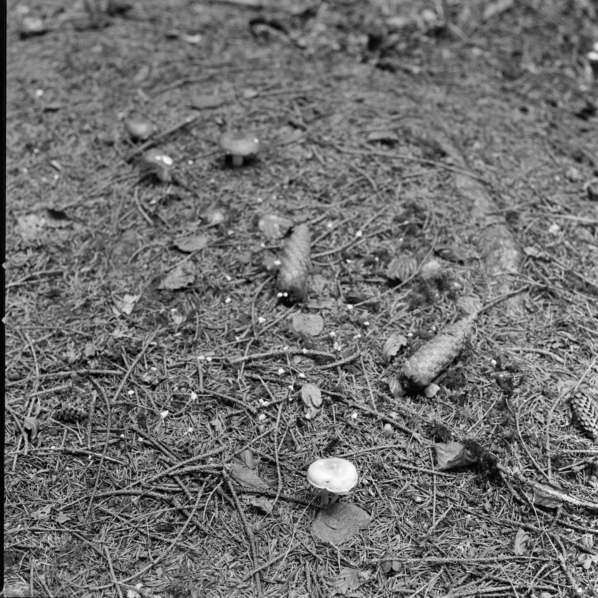
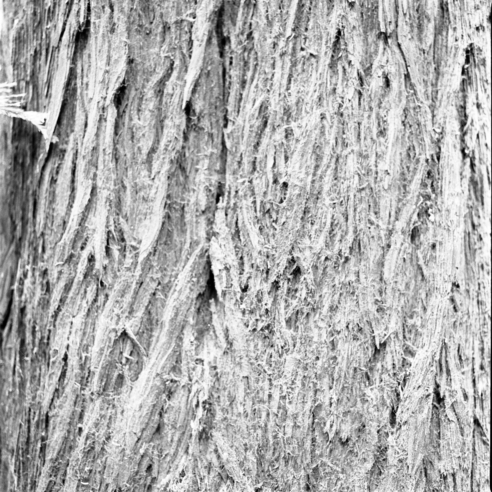
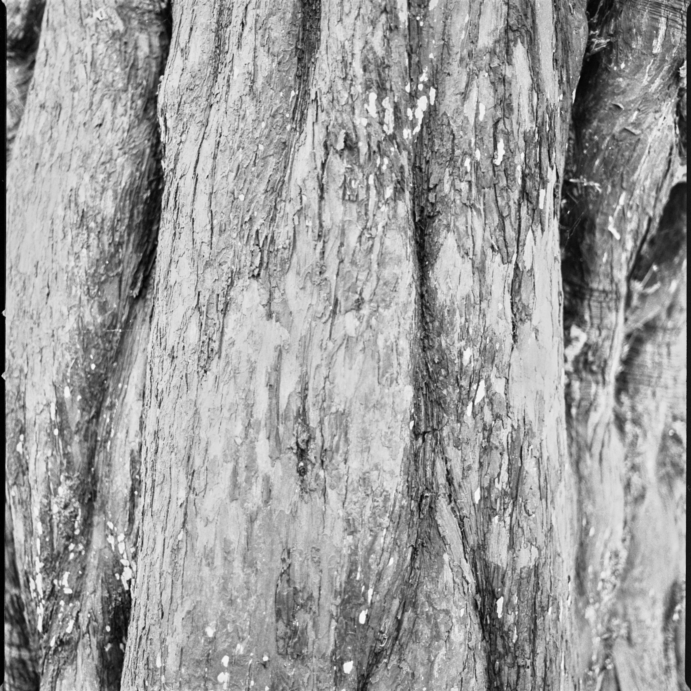
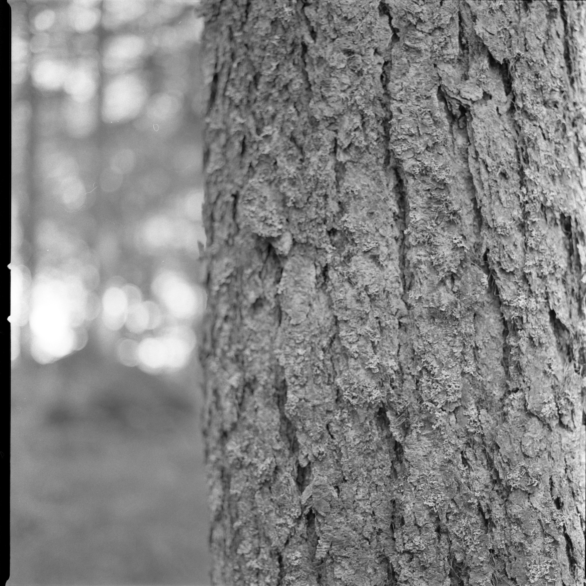
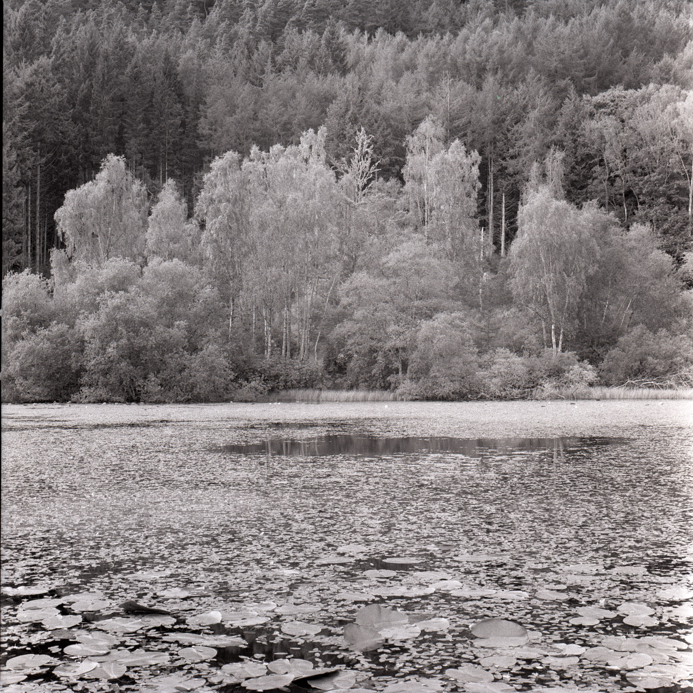
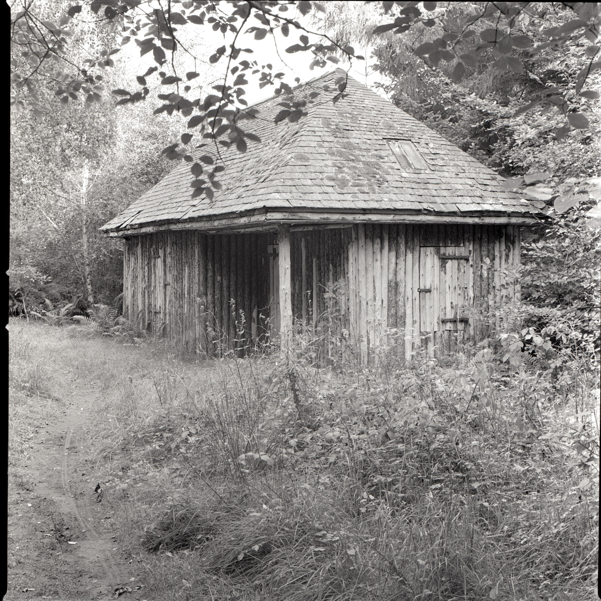
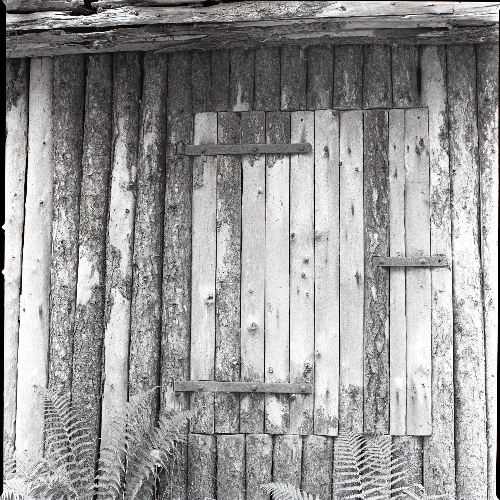
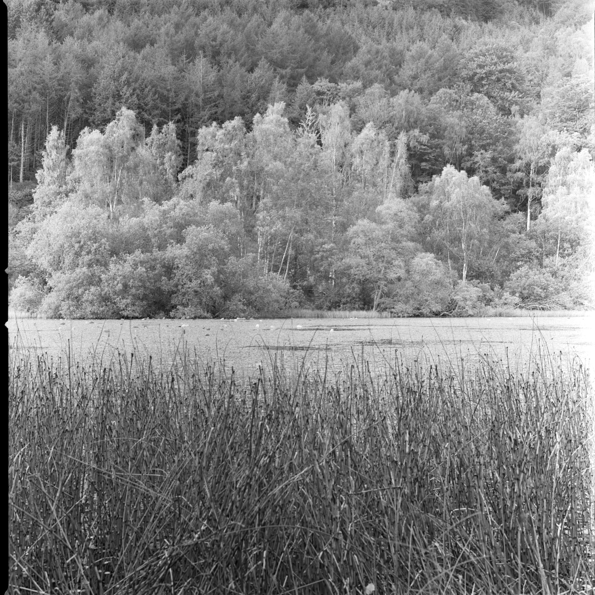

Polney Loch 9/11/21
Remembering 9/11 20 years on
 Above Polney Loch, Ricoh GRIII
Above Polney Loch, Ricoh GRIII
We needed an escape from the madness and so jumped in the car and headed North to Tiso, the M&S Foodstore and on to Dunkeld by way of the new road which is very nice, I have to say. The motive was almost a visceral need to be in the woods, and this time of year is when that experience is at its best as the colours are changing as fast as the air does: from the mouthfuls of balmy summer warmth to shorter bites of soupy vapour returned to the atmosphere as evanescent clouds. Mushroom time.
 Fungus abounds. f/8 1/2s
I took a Hasselblad 503CW with a roll of Kodak Tri-X, and a Ricoh GRIII in my pocket for the more immediate gratification of having something to show on the day for our efforts. On this day, without explicitly talking about it, we remembered the events of 20 years ago with humility and gratitude, within one of Nature’s Cathedrals.
 Bark on various trees. f/2.8 1/2s
In the peace and reflection of our walk, I noticed the bark patterns on the aged trees, like the scars of experience, each different from the others, each with their own stories to tell. These patterns became as faces of old men and women, taciturn yet expressive of triumph and loss, of lessons learned and not, of survival and the remembrance of those who did not.
 Bark on various trees. f/2.8 1/4s
These were taken quite near the Cally car park where we began our stroll and I recall the steps, the birdsong and the additional aroma of the sawmill below the path, as I write this in October. A month from now is another great remembrance when I celebrate getting older, living vicariously for those who have been denied.
 Bark on various trees. f/2.8 1/30s
The leaves on the birch trees on the far bank were turning a light golden yellow, which in this black and white image, is reminiscent of infra-red photographs I have taken. Not in this case; just gorgeous tones against the evergreen backdrop.
 Polney Loch
At the end of the loch stands this wooden lodge – a fisherman’s howff, perhaps – that looks like it is from another age. It isn’t that old by the looks of it but we might easily be convinced that we stepped through a portal back there.
 House at the end of the Loch
A detail of a hatch or door to the lodge reveals some old-time traditional craftsmanship, like you’d find on any great country estate. And ferns.
 Door detail
I developed the film a couple of weeks later in Rodinal R09 using about 50:1 over 20 minutes with some agitation. I’m reasonably happy with the results but have to ask myself if the effort involved in getting these images out of an old Hasselblad is really that much superior to the almost instantaneous and high quality of the Ricoh. If it had been just the Ricoh that day, this whole story and reflection might have been consigned to history in a single, fleeting Instagram post. Perhaps it’s nothing to do with the camera.
Notes
| Image | Camera | Lens | ISO | Format | Aperture | Shutter | Comment |
|---|---|---|---|---|---|---|---|
| Header | Ricoh GR-III | Ricoh 18.3mm | ISO 6400 | Digital | f/11 | 1/25s | Adjusted in Capture One. |
| Bark | Hasselblad 503CW | Zeiss 80mm F2.8 C | 400 | 120 | f/2.8 | 1/2 sec | |
| Bark 2 | Hasselblad 503CW | Zeiss 80mm F2.8 C | 400 | 120 | f/2.8 | 1/4 sec | |
| Bark 3 | Hasselblad 503CW | Zeiss 80mm F2.8 C | 400 | 120 | f/2.8 | 1/30 sec | |
| Mushroom | Hasselblad 503CW | Zeiss 80mm F2.8 C | 400 | 120 | f/2.8 | 1/2 sec | |
| Polney Loch | Hasselblad 503CW | Zeiss 80mm F2.8 C | 400 | 120 | f/22 | 1/3 s | |
| House | Hasselblad 503CW | Zeiss 80mm F2.8 C | 400 | 120 | f/18 | 1 sec | |
| Door | Hasselblad 503CW | Zeiss 80mm F2.8 C | 400 | 120 | f/10 | 1/8 s | |
| Below | Hasselblad 503CW | Zeiss 80mm F2.8 C | 400 | 120 | f/16 | 1/4s |
Kodak Tri-X Exposure notes
 Polney Loch
| Brand | Type | ISO | Format | Exposures | Camera | Lens |
|---|---|---|---|---|---|---|
| Kodak | Tri-X | 400 | 120 | 12 | Hasselblad 503CW | Zeiss 80mm F2.8 C |
Scanned 10 October 2021
| Frame | Image | Aperture | Shutter | Comment |
|---|---|---|---|---|
| 1 | Bark | f/2.8 | 1/2s | Cally car park |
| 2 | Bark 2 | f/2.8 | 1/4s | |
| 3 | Bark 3 | f/2.8 | 1/30s | |
| 4 | Bark 4 | f/2.8 | 1/125s | |
| 5 | Polney Loch | f/16 | 1/4s | |
| 6 | ditto | |||
| 7 | House at the end of the Loch | f/18 | 1 sec | |
| 8 | House 2 | f/22 | 1/2 sec | |
| 9 | Door | f/10 | 1/8s | |
| 10 | Loch | f/22 | 1/3s | |
| 11 | Mushrooms | f/2.8 | 1/2s | |
| 12 | Mushroom | f/8 | 1/2s |